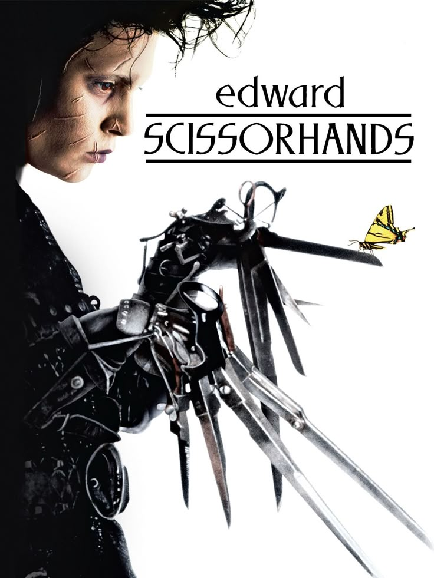
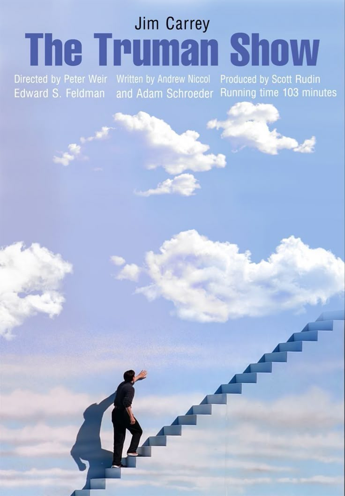
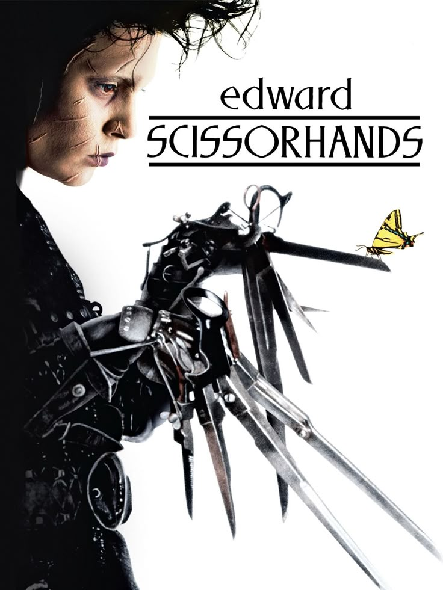
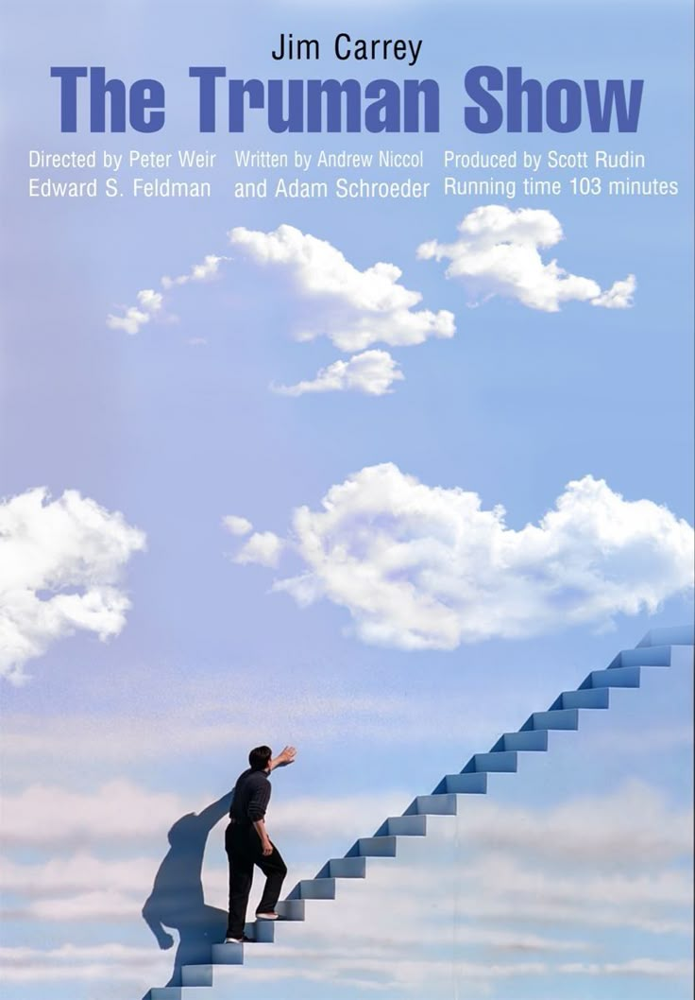

.jpg) 




A depressed and insomniac office worker feels trapped in his meaningless corporate life. Seeking relief, he forms an underground fight club with a mysterious soap salesman named Tyler Durden. The club begins as a raw outlet for men’s frustration but quickly evolves into something darker, an anarchist movement that spirals out of control. As the narrator is drawn deeper into Tyler’s chaotic philosophy, he realizes that their connection is far more complicated than he imagined, leading to a shocking revelation about identity, control, and self-destruction.
.jpg)
A gentle artificial man named Edward, who has scissors for hands, lives alone in a dark mansion after his inventor dies. When a kind woman brings him to her suburban neighborhood, Edward is at first welcomed for his talent in gardening and haircuts. But as he struggles to fit in, fear and prejudice turn the community against him, leading to a bittersweet love story and a tale about acceptance, isolation, and compassion.

Truman Burbank lives a seemingly perfect life in a quiet town, but he slowly begins to suspect that things aren’t what they seem. In reality, his entire life is a massive television show, broadcast worldwide without his knowledge. Everyone around him, family, friends, coworkers, is an actor, and every moment is carefully scripted. As Truman’s curiosity grows, he fights to discover the truth and break free from the artificial world that has controlled him since birth.